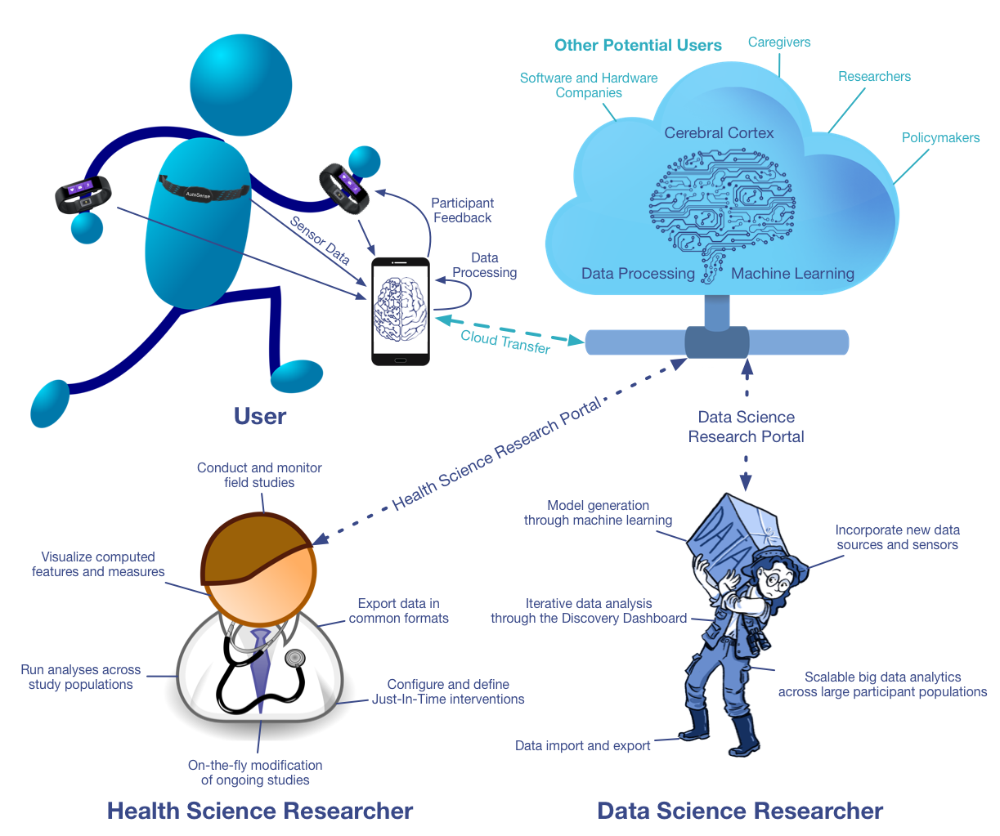

MD2K Software Platform Overview¶
Overview¶
High-Rate Sensing

mCerebrum is a mobile phone software platform that can be used to collect both high-rate raw sensor data and associated labels in the field.
Multi-Sensor Field Studies

mCerebrum supports seamless sharing of streaming data from multiple sensors to enable computation of multi-sensor biomarkers (e.g., sress, smoking, eating), which can be remotely monitored through Cerebral Cortex.
Real-Time Data Quality Monitoring

mCerebrum supports real-time assessment of data quality to ensure data fidelity which is couple with Cerebral Cortex real-time montoring capabilities.
Marker Development and Validation

Cerebral Cortex supports population-scale data analysis and visualzation to enable marker development and validation.
To Monitor Health Wellness and Work Performance

mCerebrum aims to unleash a new wave of innovative research in the assessment and improvement of everyday job performance.
Real-Time Biomarker Computation

mCerebrum is architecturally scalable to support concurrent computation of a large number of biomarkers (each of which requires complex processing) without saturating the computational capacity or battery life of a mobile phone.
Sensor-Triggered Mobile Interventions

mCerebrum supports the sense-analyze-act paradigm to aid the development and evaluation of sensor-triggered interventions
Mobile Sensor Big-Data

mCerebrum allows for high-frequency raw sensor data collection (800+ Hz for 70+ million samples/day), processing, and storage (~2GB/day) and is coupled with Cerebral Cortex which scales to 1,000s of concurrent mCerebrum instances and 100s of terabytes of data.
Use Cases¶
There are three core users of mCerebrum and Cerebral Cortex. (1) The user wearing sensors and interacting with mCerebrum which uploads data to Cerebral Cortex, (2) the health science researcher that conduct studies, visualize field data, run population-scale analysis, and (3) the data science researcher that constructs models through machine learning, runs interactive analysis through web-based dashboards, and builds scalable data analytics across large populations.